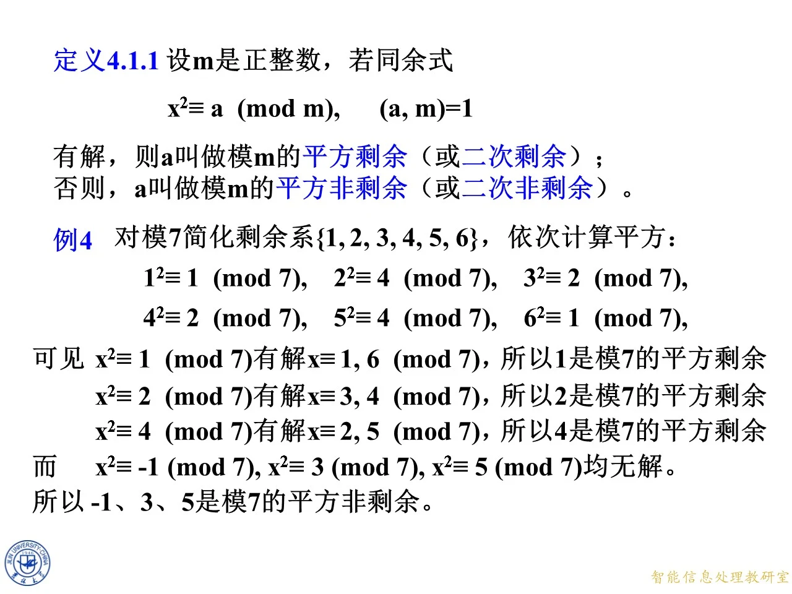
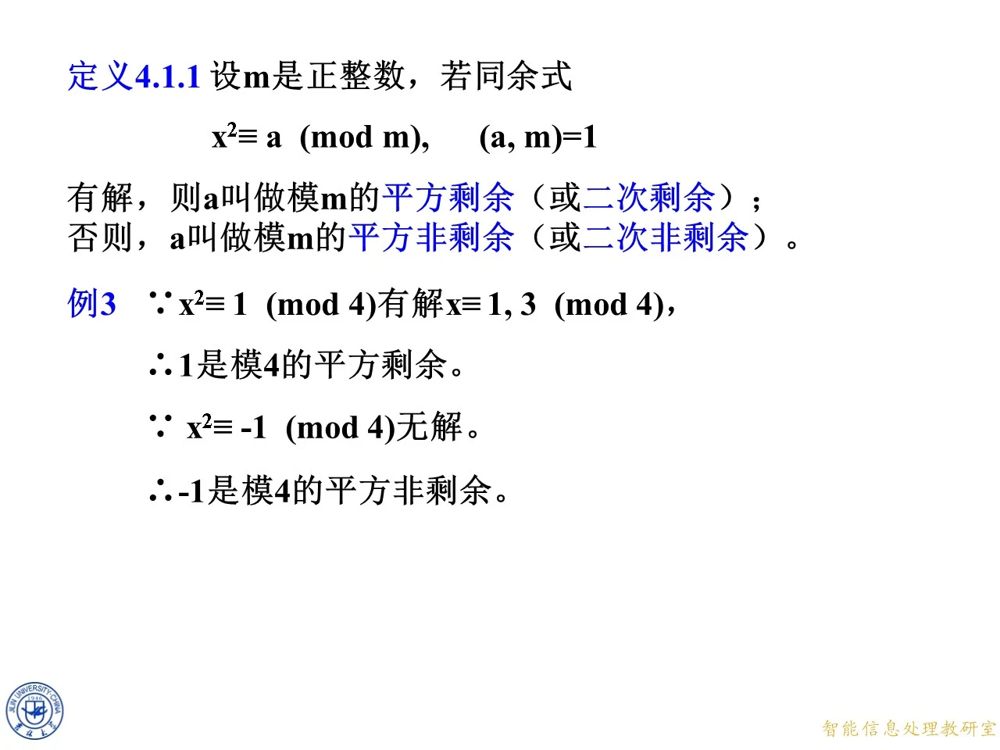

这一课要回答二次同余式的第一问：把未知数平方之后，能不能等于右边的那个数，也就是右边的数到底能不能在模某个整数下被开平方。课件把能开方的数叫做模 m 的平方剩余、不能开方的叫做平方非剩余，然后在模四和模七两个小模数上把每个数逐一验过，最后拿这张表去数椭圆曲线上的点。它是第四章的起点，后面勒让得符号、二次互反律、模平方根求法，都只是在这个定义上添工具。
定义 4.1.1：把 a a a
◆ p.48
课件给的定义原文是：设 m m m
x 2 ≡ a ( m o d m ) , ( a , m ) = 1 x^2\equiv a\pmod m,\qquad (a,m)=1 x 2 ≡ a ( mod m ) , ( a , m ) = 1
有解，则 a a a m m m 平方剩余 （或二次剩余）；否则，a a a m m m 平方非剩余 （或二次非剩余）。
这句话有三个要件，缺一个都不成立，读定义时要盯住：
右侧才是被命名的对象 。叫"平方剩余"的是 a a a x x x a a a x 2 x^2 x 2 m m m x x x 必须 ( a , m ) = 1 (a,m)=1 ( a , m ) = 1 。a a a a a a m m m x 2 ≡ 0 ( m o d 8 ) x^2\equiv 0\pmod 8 x 2 ≡ 0 ( mod 8 ) a a a "有解"指存在整数解 。只要有一个整数 x x x a a a x x x m m m x x x
◆ p.49
这一页定义没变，只是在下面加了一个浅色方框，框里先摆出条件 ( a , m ) = 1 (a,m)=1 ( a , m ) = 1 ( a , m ) = 1 (a,m)=1 ( a , m ) = 1
如果允许 ( a , m ) = d > 1 (a,m)=d>1 ( a , m ) = d > 1 m = 8 m=8 m = 8 a = 4 a=4 a = 4 ( 4 , 8 ) = 4 ≠ 1 (4,8)=4\ne1 ( 4 , 8 ) = 4 = 1 x = 2 x=2 x = 2 x 2 ≡ 4 ( m o d 8 ) x^2\equiv4\pmod 8 x 2 ≡ 4 ( mod 8 ) 8 8 8 1 1 1 a ≡ 0 a\equiv0 a ≡ 0 x 2 ≡ 0 x^2\equiv0 x 2 ≡ 0 φ ( m ) \varphi(m) φ ( m ) 只在模 m m m 。

课件原图 · 10月12日授课 · 第 63 页 查看前后已收录原页 → 定义框的补充与例 3：模 4 4 4
◆ p.50-54 ｜定义框的补充说明与例 3（同一张幻灯片逐步展开）
这一页（同一张幻灯片的连续几帧）把框补完整：p.51 的帧在箭头两侧写出 ( a , m ) = 1 (a,m)=1 ( a , m ) = 1 ( x , m ) = 1 (x,m)=1 ( x , m ) = 1 a a a m m m x x x m m m m m m
( a , m ) = 1 ⟹ ( x , m ) = 1 (a,m)=1\ \Longrightarrow\ (x,m)=1 ( a , m ) = 1 ⟹ ( x , m ) = 1
这三层意思逐条讲：
一边互素，另一边必互素 。设 d ∣ x d\mid x d ∣ x d ∣ m d\mid m d ∣ m x 2 ≡ a ( m o d m ) x^2\equiv a\pmod m x 2 ≡ a ( mod m ) m ∣ x 2 − a m\mid x^2-a m ∣ x 2 − a d ∣ x 2 − a d\mid x^2-a d ∣ x 2 − a d ∣ x d\mid x d ∣ x d ∣ x 2 d\mid x^2 d ∣ x 2 d ∣ a d\mid a d ∣ a d d d a a a m m m ( a , m ) = 1 (a,m)=1 ( a , m ) = 1 d = 1 d=1 d = 1 ( x , m ) = 1 (x,m)=1 ( x , m ) = 1 ( x , m ) = 1 (x,m)=1 ( x , m ) = 1 x 2 x^2 x 2 m m m x 2 x^2 x 2 m m m m m m 因此 a a a 。判定"a a a a a a m m m a a a 因此解 x x x 。搜索范围从 m m m φ ( m ) \varphi(m) φ ( m ) m m m x x x
拓展 （课件外补充）：为什么平方剩余最多只占一半？在模 m m m x ↦ x 2 x\mapsto x^2 x ↦ x 2 x x x − x -x − x m − x m-x m − x φ ( m ) / 2 \varphi(m)/2 φ ( m ) /2 m m m p p p x 2 ≡ y 2 ( m o d p ) x^2\equiv y^2\pmod p x 2 ≡ y 2 ( mod p ) ( x − y ) ( x + y ) ≡ 0 ( m o d p ) (x-y)(x+y)\equiv0\pmod p ( x − y ) ( x + y ) ≡ 0 ( mod p ) p p p x ≡ y x\equiv y x ≡ y x ≡ − y x\equiv-y x ≡ − y ( p − 1 ) / 2 (p-1)/2 ( p − 1 ) /2 ( p − 1 ) / 2 (p-1)/2 ( p − 1 ) /2
例 3 出现在这张幻灯片的最后两帧（p.53-54），课件只写了两个"因为—所以"：
∵ \because ∵ x 2 ≡ 1 ( m o d 4 ) x^2\equiv1\pmod 4 x 2 ≡ 1 ( mod 4 ) x ≡ 1 , 3 ( m o d 4 ) x\equiv1,3\pmod 4 x ≡ 1 , 3 ( mod 4 ) ∴ \therefore ∴ 1 1 1 4 4 4 ∵ \because ∵ x 2 ≡ − 1 ( m o d 4 ) x^2\equiv-1\pmod 4 x 2 ≡ − 1 ( mod 4 ) ∴ \therefore ∴ − 1 -1 − 1 4 4 4
把中间过程补出来。模 4 4 4 { 1 , 3 } \{1,3\} { 1 , 3 } 0 , 2 0,2 0 , 2 4 4 4
1 2 = 1 ≡ 1 ( m o d 4 ) , 3 2 = 9 ≡ 1 ( m o d 4 ) 1^2=1\equiv1\pmod 4,\qquad 3^2=9\equiv1\pmod 4 1 2 = 1 ≡ 1 ( mod 4 ) , 3 2 = 9 ≡ 1 ( mod 4 )
两个数平方后都落在 1 1 1 { 1 } \{1\} { 1 }
对 a = 1 a=1 a = 1 x 2 ≡ 1 ( m o d 4 ) x^2\equiv1\pmod 4 x 2 ≡ 1 ( mod 4 ) x ≡ 1 x\equiv1 x ≡ 1 x ≡ 3 x\equiv3 x ≡ 3 1 2 = 1 1^2=1 1 2 = 1 3 2 = 9 = 4 × 2 + 1 3^2=9=4\times2+1 3 2 = 9 = 4 × 2 + 1 1 1 1 1 1 1 4 4 4
对 a = − 1 a=-1 a = − 1 4 4 4 − 1 ≡ 3 -1\equiv3 − 1 ≡ 3 1 1 1 3 3 3 x 2 ≡ − 1 ( m o d 4 ) x^2\equiv-1\pmod 4 x 2 ≡ − 1 ( mod 4 ) − 1 -1 − 1 4 4 4
这里有个极易混淆的点，课件用这题正是要打掉它：3 3 3 x ≡ 3 x\equiv3 x ≡ 3 x 2 ≡ 1 x^2\equiv1 x 2 ≡ 1 a = 3 a=3 a = 3 − 1 -1 − 1 3 3 3
拓展 （课件外补充）：模 4 4 4 ≡ 1 ( m o d 4 ) \equiv1\pmod 4 ≡ 1 ( mod 4 ) 2 k + 1 2k+1 2 k + 1 4 k 2 + 4 k + 1 = 4 k ( k + 1 ) + 1 4k^2+4k+1=4k(k+1)+1 4 k 2 + 4 k + 1 = 4 k ( k + 1 ) + 1 k ( k + 1 ) k(k+1) k ( k + 1 ) 4 ∣ 4 k ( k + 1 ) 4\mid4k(k+1) 4 ∣ 4 k ( k + 1 ) 1 1 1 − 1 -1 − 1 4 4 4 4 4 4 p ≡ 1 p\equiv1 p ≡ 1 p ≡ 3 ( m o d 4 ) p\equiv3\pmod 4 p ≡ 3 ( mod 4 )

课件原图 · 10月12日授课 · 第 54 页 查看前后已收录原页 → 例 4：模 7 7 7
◆ p.55-63 ｜对模 7 7 7 7 7 7 { 1 , 2 , 3 , 4 , 5 , 6 } \{1,2,3,4,5,6\} { 1 , 2 , 3 , 4 , 5 , 6 }
1 2 ≡ 1 , 2 2 ≡ 4 , 3 2 ≡ 2 , 4 2 ≡ 2 , 5 2 ≡ 4 , 6 2 ≡ 1 ( m o d 7 ) 1^2\equiv1,\quad 2^2\equiv4,\quad 3^2\equiv2,\quad 4^2\equiv2,\quad 5^2\equiv4,\quad 6^2\equiv1\pmod 7 1 2 ≡ 1 , 2 2 ≡ 4 , 3 2 ≡ 2 , 4 2 ≡ 2 , 5 2 ≡ 4 , 6 2 ≡ 1 ( mod 7 )
（逐个验算：2 2 = 4 2^2=4 2 2 = 4 3 2 = 9 = 7 + 2 3^2=9=7+2 3 2 = 9 = 7 + 2 4 2 = 16 = 14 + 2 4^2=16=14+2 4 2 = 16 = 14 + 2 5 2 = 25 = 21 + 4 5^2=25=21+4 5 2 = 25 = 21 + 4 6 2 = 36 = 35 + 1 6^2=36=35+1 6 2 = 36 = 35 + 1
x x x 1 1 1 2 2 2 3 3 3 4 4 4 5 5 5 6 6 6
x 2 m o d 7 x^2\bmod 7 x 2 mod 7 1 1 1 4 4 4 2 2 2 2 2 2 4 4 4 1 1 1
然后按 a a a
x 2 ≡ 1 ( m o d 7 ) x^2\equiv1\pmod 7 x 2 ≡ 1 ( mod 7 ) x ≡ 1 , 6 ( m o d 7 ) x\equiv1,6\pmod 7 x ≡ 1 , 6 ( mod 7 ) 1 1 1 7 7 7 x 2 ≡ 2 ( m o d 7 ) x^2\equiv2\pmod 7 x 2 ≡ 2 ( mod 7 ) x ≡ 3 , 4 ( m o d 7 ) x\equiv3,4\pmod 7 x ≡ 3 , 4 ( mod 7 ) 2 2 2 7 7 7 x 2 ≡ 4 ( m o d 7 ) x^2\equiv4\pmod 7 x 2 ≡ 4 ( mod 7 ) x ≡ 2 , 5 ( m o d 7 ) x\equiv2,5\pmod 7 x ≡ 2 , 5 ( mod 7 ) 4 4 4 7 7 7 而 x 2 ≡ − 1 ( m o d 7 ) x^2\equiv-1\pmod 7 x 2 ≡ − 1 ( mod 7 ) x 2 ≡ 3 ( m o d 7 ) x^2\equiv3\pmod 7 x 2 ≡ 3 ( mod 7 ) x 2 ≡ 5 ( m o d 7 ) x^2\equiv5\pmod 7 x 2 ≡ 5 ( mod 7 ) − 1 -1 − 1 3 3 3 5 5 5 7 7 7
（表里只出现 1 , 2 , 4 1,2,4 1 , 2 , 4 ( 7 − 1 ) / 2 = 3 (7-1)/2=3 ( 7 − 1 ) /2 = 3 3 3 3 − 1 -1 − 1 6 6 6 − 1 ≡ 6 ( m o d 7 ) -1\equiv6\pmod 7 − 1 ≡ 6 ( mod 7 ) { 3 , 5 , 6 } \{3,5,6\} { 3 , 5 , 6 } { 3 , 5 , − 1 } \{3,5,-1\} { 3 , 5 , − 1 }
拓展 （课件外补充）：两条直觉。第一，平方后的值成对重复——1 1 1 6 = − 1 6=-1 6 = − 1 2 2 2 5 = − 2 5=-2 5 = − 2 3 3 3 4 = − 3 4=-3 4 = − 3 ( m − x ) 2 = m 2 − 2 m x + x 2 ≡ x 2 ( m o d m ) (m-x)^2=m^2-2mx+x^2\equiv x^2\pmod m ( m − x ) 2 = m 2 − 2 m x + x 2 ≡ x 2 ( mod m ) 6 6 6 1 1 1 6 6 6 1 1 1 a = 6 a=6 a = 6
练习与思考：从 29 2 ≡ 11 ( m o d 83 ) 29^2\equiv11\pmod{83} 2 9 2 ≡ 11 ( mod 83 )
◆ p.64-68 ｜课件把例 4 的平方表留在页面上做参照，新内容是一个填空练习加一个思考题。
练习：已知 29 2 ≡ 11 ( m o d 83 ) 29^2\equiv11\pmod{83} 2 9 2 ≡ 11 ( mod 83 )
____ 是模 83 83 83
二次同余式 x 2 ≡ 11 ( m o d 83 ) x^2\equiv11\pmod{83} x 2 ≡ 11 ( mod 83 )
二次同余式 x 2 ≡ 11 ( m o d 83 ) x^2\equiv11\pmod{83} x 2 ≡ 11 ( mod 83 )
思考：x 2 ≡ 11 ( m o d 83 ) x^2\equiv11\pmod{83} x 2 ≡ 11 ( mod 83 )
解答 。先验算已知条件：29 2 = 841 29^2=841 2 9 2 = 841 83 × 10 = 830 83\times10=830 83 × 10 = 830 841 = 830 + 11 841=830+11 841 = 830 + 11 29 2 ≡ 11 ( m o d 83 ) 29^2\equiv11\pmod{83} 2 9 2 ≡ 11 ( mod 83 ) ( 11 , 83 ) = 1 (11,83)=1 ( 11 , 83 ) = 1
第一空填 11 11 11 x 2 ≡ 11 ( m o d 83 ) x^2\equiv11\pmod{83} x 2 ≡ 11 ( mod 83 ) x = 29 x=29 x = 29 11 11 11 83 83 83 11 11 11 83 83 83
第二空填 29 29 29 x ≡ 29 ( m o d 83 ) x\equiv29\pmod{83} x ≡ 29 ( mod 83 )
第三空填 83 − 29 = 54 83-29=54 83 − 29 = 54 x x x ( − x ) 2 = x 2 ≡ 11 (-x)^2=x^2\equiv11 ( − x ) 2 = x 2 ≡ 11 − 29 ≡ 83 − 29 = 54 ( m o d 83 ) -29\equiv83-29=54\pmod{83} − 29 ≡ 83 − 29 = 54 ( mod 83 ) 54 54 54 54 2 = 2916 54^2=2916 5 4 2 = 2916 83 × 35 = 2905 83\times35=2905 83 × 35 = 2905 2916 ≡ 11 ( m o d 83 ) 2916\equiv11\pmod{83} 2916 ≡ 11 ( mod 83 )
思考题的答案：不会再有第三个解。 设 x x x x 2 ≡ 29 2 ( m o d 83 ) x^2\equiv29^2\pmod{83} x 2 ≡ 2 9 2 ( mod 83 )
( x − 29 ) ( x + 29 ) ≡ 0 ( m o d 83 ) (x-29)(x+29)\equiv0\pmod{83} ( x − 29 ) ( x + 29 ) ≡ 0 ( mod 83 )
83 83 83 2 , 3 , 5 , 7 2,3,5,7 2 , 3 , 5 , 7 83 < 10 \sqrt{83}<10 83 < 10 p ∣ u v p\mid uv p ∣ uv p ∣ u p\mid u p ∣ u p ∣ v p\mid v p ∣ v x − 29 ≡ 0 x-29\equiv0 x − 29 ≡ 0 x + 29 ≡ 0 ( m o d 83 ) x+29\equiv0\pmod{83} x + 29 ≡ 0 ( mod 83 ) x ≡ 29 x\equiv29 x ≡ 29 x ≡ 54 ( m o d 83 ) x\equiv54\pmod{83} x ≡ 54 ( mod 83 ) 83 83 83
拓展 （课件外补充）：把这件事一般化，得到本章反复要用的结论——若 p p p p ∤ a p\nmid a p ∤ a x 2 ≡ a ( m o d p ) x^2\equiv a\pmod p x 2 ≡ a ( mod p ) p p p x 2 − y 2 = ( x − y ) ( x + y ) x^2-y^2=(x-y)(x+y) x 2 − y 2 = ( x − y ) ( x + y ) 一旦模不是素数，结论立刻失效 ：模 8 8 8 1 2 ≡ 3 2 ≡ 5 2 ≡ 7 2 ≡ 1 ( m o d 8 ) 1^2\equiv3^2\equiv5^2\equiv7^2\equiv1\pmod 8 1 2 ≡ 3 2 ≡ 5 2 ≡ 7 2 ≡ 1 ( mod 8 ) x 2 ≡ 1 ( m o d 8 ) x^2\equiv1\pmod 8 x 2 ≡ 1 ( mod 8 )
拓展 （课件外补充）：这个练习还演示了一种实用的求第二根的方法：只要能找到一个根 x 0 x_0 x 0 x ≡ − x 0 ( m o d m ) x\equiv -x_0\pmod m x ≡ − x 0 ( mod m ) p ≡ 3 ( m o d 4 ) p\equiv3\pmod 4 p ≡ 3 ( mod 4 ) a ( p + 1 ) / 4 a^{(p+1)/4} a ( p + 1 ) /4 ( 83 + 1 ) / 4 = 21 (83+1)/4=21 ( 83 + 1 ) /4 = 21 11 21 m o d 83 = 29 11^{21}\bmod 83=29 1 1 21 mod 83 = 29